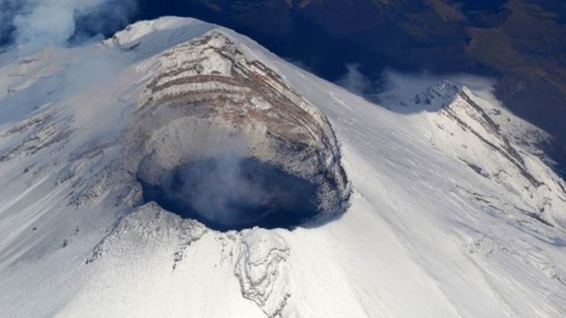
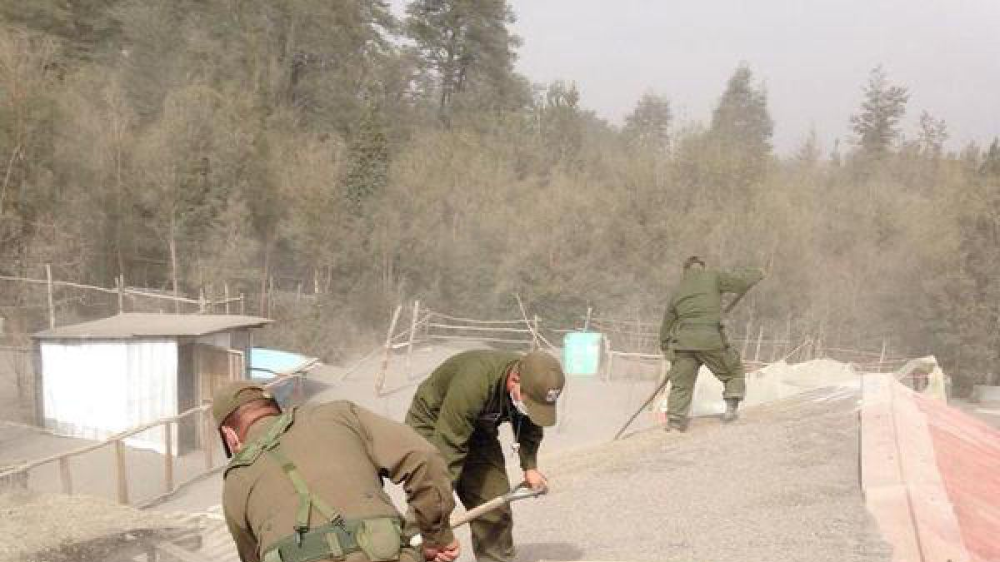
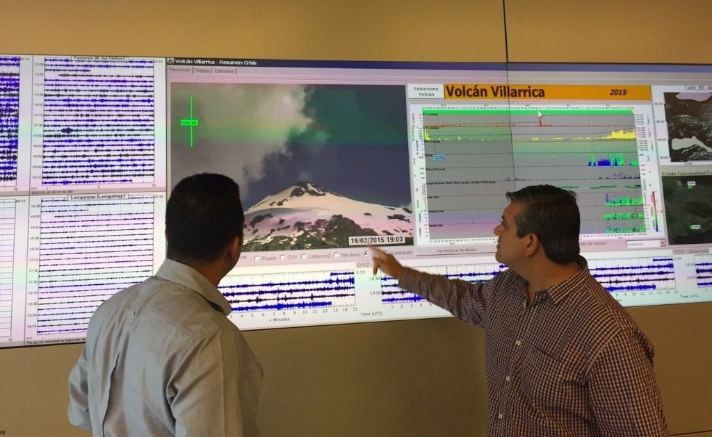
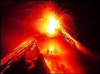

Volcan Popocatepetl
Volcan Popocatepetl
Imagenes del volcan Popocatepetl
Aplicacion Tres
Juan Pablo Gonzalez Varela
Ubicacion del volcan popocatepetl
El Popocatépetl (en náhuatl: Popocatépetl, ‘el cerro que humea’)es un volcán activo localizado en el centro de México, en los límites territoriales de los estados de Morelos, Puebla y México. Se localiza a unos 72 km al sureste de la Ciudad de México, 43 km de Puebla, 63 km de Cuernavaca, y 53 km de Tlaxcala
APLICACION TRES VOLCAN POPOCATEPETL, GVJP
Dimensiones del Volcan Popocatepetl
El Popocatépetl es un estratovolcán, y los estudios paleo magnéticos que se han hecho de él indican que tiene una edad aproximada de 730 000 años. Su altura es de 5500 msnm, es de forma cónica, tiene un diámetro de 25 km en su base y la cima es el corte elíptico de un cono y tiene una orientación noreste-suroeste. La distancia entre las paredes de su cráter varía entre los 660 y los 840 m

APLICACION TRES VOLCAN POPOCATEPETL, GVJP
Recomendaciones en caso de caida de ceniza volcanica
• No humedecer la ceniza a fin de evitar taponamientos en el sistema de alcantarillado
• Mantén la calma.
• Utiliza medios electrónicos y de comunicación para obtener información confiable que den las autoridades de Protección Civil sobre la caída de ceniza y atiende siempre sus instrucciones.
• No realices actividades al aire libre y si es posible no salgas.
• Cierra puertas y ventanas y coloca toallas o trapos húmedos en las rendijas.
• Si tienes que salir cúbrete con un pañuelo o tapabocas, limpia ojos y garganta con agua pura.

APLICACION TRES VOLCAN POPOCATEPETL, GVJP
Dependencia que los monitorean
México, DF. 3 de noviembre de 2015 (Agencia Informativa Conacyt).- La Universidad Popular Autónoma del Estado de Puebla upaep se encuentra desarrollando el prototipo de un pico satélite Cansat para analizar y monitorear los aerosoles y ceniza emitidos por el emblemático volcán Popocatépetl, y la observación de gran parte del territorio poblano.
• VIGILANCIA VISUAL: Involucra monitoreo continuo por medio de una cámara de televisión situada cerca del volcán que transmite al CENAPRED y reconocimientos visuales frecuentes desde tierra o desde el aire.
• MONITOREO SISMICO: Consiste en una red de estaciones sismológicas situadas sobre y alrededor del volcán, enlazadas por radio telemetría, como el centro de recepción y procesamiento de la información en el CENAPRED.
•
• MONITOREO GEODESICO: Consiste en redes de estaciones monumentadas, puntos de observación, e inclinó metros para detectar y medir deformaciones del edificio volcánico.
• MONITOREO GEOQUIMICO: Análisis químico frecuente de la fumarola (por espectrometría de correlación (COSPEC) y por Li-Cor, para determinación de la concentración de Bióxido de Azufre y Bióxido de Carbono respectivamente en la pluma que emana del cráter.

APLICACION TRES VOLCAN POPOCATEPETL, GVJP
Recomendaciones para la erupcion del volcan
• Mantente alejado de volcanes activos.
• Si vives cerca de un volcán activo, prepara un kit de emergencia que incluya gafas de seguridad, una máscara, una linterna y una radio en buen estado que funcione con pilas.
• Elabora una ruta de evacuación y ten el depósito de gasolina del coche siempre lleno.
• Evacua siguiendo las recomendaciones de las autoridades para no encontrarte lava y barro, así como rocas y escombros que puede arrojar el volcán.
• Evita zonas de ríos y regiones bajas

APLICACION TRES VOLCAN POPOCATEPETL, GVJP
Informacion del Volcan de colima
El volcán de colima es un estratovolcán ubicado en los límites de los estados de Colima y Jalisco, en México. El volcán de Colima o volcán de Fuego se eleva entre 3870 y 3940 msnm, y su altura se encuentra en un constante cambio gracias a la constante actividad que ha presentado durante los últimos años
APLICACION TRES VOLCAN POPOCATEPETL, GVJP